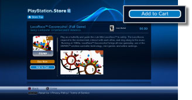
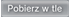
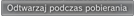

PlayStation®Network > Pobieranie (kupowanie) produktów
Pobieranie (kupowanie) produktów
Aby używać tej funkcji, może być konieczne zaktualizowanie oprogramowania systemowego.
Na konsolę można pobierać produkty (płatne i bezpłatne), takie jak gry, dodatki do gier lub materiały wideo, które są dostępne w sklepie  (PlayStation®Store). Aby móc pobrać zakupione lub bezpłatne produkty ze sklepu (PlayStation®Store), należy najpierw utworzyć konto PlayStation®Network.
(PlayStation®Store). Aby móc pobrać zakupione lub bezpłatne produkty ze sklepu (PlayStation®Store), należy najpierw utworzyć konto PlayStation®Network.
1. |
Wybierz opcje |
||||||||||||
|---|---|---|---|---|---|---|---|---|---|---|---|---|---|
2. |
Wybierz płatny lub bezpłatny produkt, który chcesz pobrać ze sklepu |
||||||||||||
3. |
Wybierz opcję [Add to Cart].  |
||||||||||||
4. |
Wybierz opcję [View Cart], aby wyświetlić następujący ekran. Widoczne będą elementy znajdujące się w koszyku na zakupy.
|
||||||||||||
5. |
Wybierz opcję [Proceed to Checkout]. |
||||||||||||
6. |
Wybierz opcję [Confirm Purchase]. |
||||||||||||
7. |
Wybierz element do pobrania. |

Wskazówki
- Produkty dostępne w sklepie (PlayStation®Store) różnią się w zależności od kraju lub regionu. Można uzyskać dostęp wyłącznie do sklepu (PlayStation®Store) przeznaczonego dla kraju lub regionu, w którym zostało zarejestrowane konto PlayStation®Network użytkownika.
- Aby uzyskać informacje na temat typów produktów, które można pobrać (po zakupie lub bezpłatnie) ze sklepu (PlayStation®Store), oraz usług dostępnych po zakupie, odwiedź witrynę internetową SCE dla swojego regionu.
- Jeśli dla kupowanego elementu w kroku 3 zostanie wybrana opcja [Buy Now], można pominąć stronę koszyka na zakupy i przejść bezpośrednio do ekranu potwierdzenia zakupu (krok 6). Po określeniu w ustawieniach konta w sieci PlayStation®Network informacji o karcie kredytowej fundusze zostaną dodane automatycznie, jeśli w portfelu nie będzie środków niezbędnych do sfinalizowania zakupu.

- W przypadku wybrania opcji [Pobierz] dla elementu bezpłatnego (krok 3) strona koszyka na zakupy zostanie pominięta i nastąpi przejście bezpośrednio do ekranu pobierania (krok 7).

- Jeśli identyfikator logowania (adres e-mail) jest nieprawidłowy (lub nie jest prawidłowym adresem e-mail), wiadomość z potwierdzeniem nie zostanie dostarczona. Podczas rejestracji swojego identyfikatora logowania należy podać poprawny adres e-mail, na który będą mogły przychodzić wiadomości. Aby zmienić swój identyfikator logowania, należy przejść do kategorii
 (PlayStation®Network), a następnie wybrać opcję
(PlayStation®Network), a następnie wybrać opcję  (Zarządzanie kontami) >
(Zarządzanie kontami) >  (Account Information) > [Sign-In ID (E-mail Address)]. Postępuj zgodnie z instrukcjami wyświetlanymi na ekranie, aby wprowadzić zmiany.
(Account Information) > [Sign-In ID (E-mail Address)]. Postępuj zgodnie z instrukcjami wyświetlanymi na ekranie, aby wprowadzić zmiany. - W pewnych przypadkach zawartość pobrana ze sklepu (PlayStation®Store) może być używana tylko w urządzeniach aktywowanych za pomocą konsoli PS3™, takich jak inna konsola PS3™ lub konsola PSP™. Aby aktywować lub dezaktywować konsolę, należy wybrać opcję (Zarządzanie kontami) w kategorii (PlayStation®Network), a następnie wybrać opcję
 (System Activation). Postępuj zgodnie z instrukcjami wyświetlanymi na ekranie, aby dokończyć operację.
(System Activation). Postępuj zgodnie z instrukcjami wyświetlanymi na ekranie, aby dokończyć operację. - Jeśli podczas pobierania na ekranie wyświetlana jest opcja

, podczas pobierania można wykonywać inne operacje. Wybierz opcję , aby przejść do poprzedniego ekranu, kontynuując pobieranie. Szczegółowe informacje można znaleźć w temacie (Sieć) >
(Sieć) >  (Zarządzanie pobieraniem) > [Pobieranie w tle] w niniejszej instrukcji.
(Zarządzanie pobieraniem) > [Pobieranie w tle] w niniejszej instrukcji. - Jeśli podczas pobierania na ekranie wyświetlony jest napis

, plik wideo może być odtwarzany podczas pobierania. Po zaznaczeniu opcji ekran sklepu (PlayStation®Store) zostanie zamknięty i rozpocznie się odtwarzanie pliku wideo.